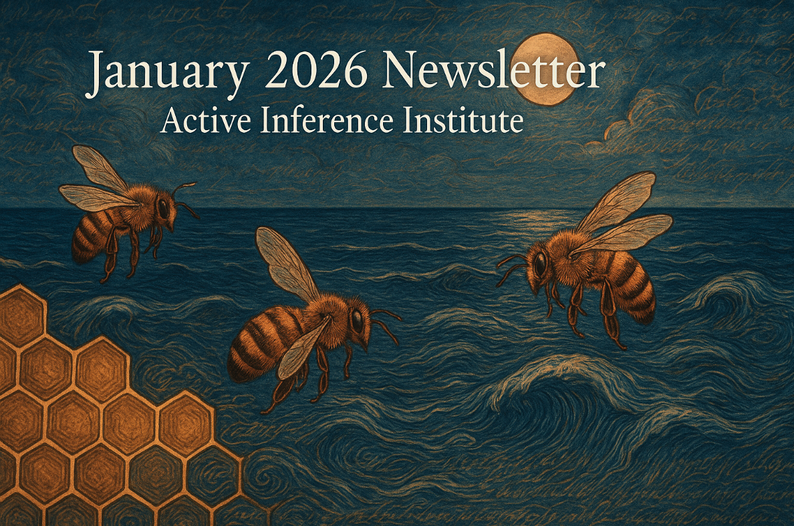

Full issue
Newsletter content
This page preserves the archived newsletter text, public links, and media.
Active Inference Education Participation Research Newsletter
- Published
- Format
- Newsletter
We have many updates to share this month, and so much coming for this year!
Institute-scale Updates
- This page summarizes the structure of the Institute — a helpful entry point for those who are new, and something nice to revisit for those who have been around. As we enter into our 6th (!) year of activities, our form and function continue to develop.
- For 2026, we welcome a new Board of Directors: Alexander Sabine, Alianna J. Maren, Ana Magdalena Hurtado, Ann Stapleton, Austin Cook, Daniel Friedman, Edward Ober, Ellynne Dec, V. Bleu Knight, Vladimir Baulin.
- We also welcome a new Scientific Advisory Board — 33 new and returning people!
- We look forward to exciting growth and developments in the Institute, this year and beyond, thanks to these capable and enthusiastic volunteers.
Updates from Institute Fellows
- Anna Pereira reports: The Navigating Uncertainty book has been released, and is being used to develop out ideas and support interviews.
- Robert Worden reports: Several new publications, including “AI and World Models” and “Computers, meaning, and consciousness”. Work continues on the Wave Hypothesis.
- Jean-Francois Cloutier reports from the Symbolic Cognitive Robotics project (sym_cog_robotics Discord channel) reports: I made progress in coding the OODA loop of a cognition actor as part of my implementation (in multi-threaded Prolog and Elixir) of robotic artificial agency. More specifically, I completed the implementation of the “experience” step and started implementation of the “feel” step.
- John Boik reports from the CogNarr Ecosystem: Facilitating Group Cognition at Scale project: An initial draft white paper has been written about the design of the Story Graph representation. A web-based GUI has been constructed (using the Genie.jl framework), and importantly, I have developed what looks to be a state-of-the-art text-to-DRS (discourse representation structure) parser. That parser is nearly complete, all written in Julia. Just on its own it ought to be of interest to the Julia community, as it is a first of its kind in Julia (as far as I know). The parser is much more sophisticated than what I was originally intending for a stick-figure CogNarr. There has been substantial progress on the CogNarr MVP web application: functional front-end and back-end servers with multiple story views (SDRS graph, clause form, timeline), and a Combinatory Categorial Grammar (CCG) parser achieving 86% coverage on the Parallel Meaning Bank benchmark.
- Hongju Pae reports: During this period, I implemented and empirically explored an early instantiation of the Phase 1 “Perspective Architecture” outlined in the CEAR Lab Executive Summary. Concretely, I built a minimal Active Inference-style agent in which a slowly evolving latent variable (the “Perspective” latent) functions as an internal generative constraint shaping perception and action, compared to the Policy or reward parameter. The early demo can be found here. I evaluated this architecture in a reward-free, multi-zone gridworld designed to separate environmental structure from task optimization. The primary measurements focused on internal dynamical signatures, and the primary milestone was the successful early instantiation of the Phase 1 “Perspective Architecture”. This work establishes an experimental foundation for subsequent phases of the project, enabling systematic investigation of affective coherence (Phase 2) and early forms of social resonance in multi-agent settings (Phase 3). While the current implementation is minimal, it fulfills the Phase 1 goal of making Perspective a testable component, while under comparison with the Policy.
Updates from Projects
- For the upcoming textbook “Fundamentals of Active Inference: Principles, Algorithms, and Applications of the Free Energy Principle for Engineers” by Sanjeev V. Namjoshi (2026) — We will host a textbook group starting in March 2026! All details and registration form here.
- Daniel Friedman published “Cognitive Integrity Framework: Formal Foundations for Multiagent Security”.
- Complete a Measurement form to have your research, education, and work updates included in a future newsletter.
Some highlight livestreams from the last month included:
- ModelStream #019.1 ~ 1/15/2026 with Patrick Kenny on Active Inference in Discrete State Spaces from First Principles
- GuestStream #126.1 ~ 1/29/2026 with Chris Fields and James Glazebrook on Distributed Information and Computation in Generic Quantum Systems
- ModelStream #020.1 ~ 1/30/2026 with Kenric Nelson on Learning extreme models with the Coupled Free Energy
- If you would like to help make audio-visual content with the Institute are many roles available “on stage” as well as “behind the scenes”, for example to help plan livestreams. See this video for more information.
All activities at, and products from, the Institute are provided open source and without any financial barrier. Donate to the Institute to support our impact and sustainability.
Here is the entry point for 2026, and ways to get involved with the Institute and Ecosystem this year.
Subscribe to or share the newsletter, or contact us with other philanthropic and grant ideas.
Get in touch if you have general or specific feedback, ideas, or questions for the Institute.
More to come! Stay tuned via the newsletter and Discord.
Both with Certainty and Uncertainty,
Officers, Alexandra & Daniel
🐜🐜
